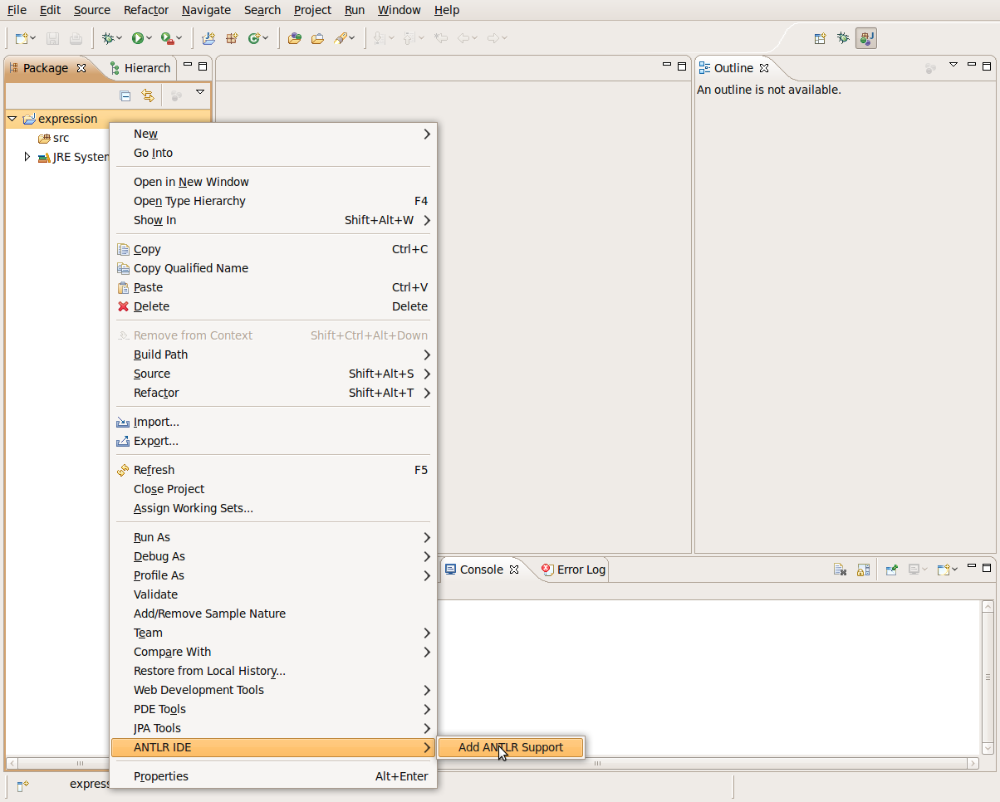

Adding ANTLR Support to your project
In this section, you will add ANTLR Support to a project.
Add ANTLR Support
- Inside Eclipse select your project.
- Right click on your project and select ANTLR
IDE > Add ANTLR Support. The ANTLR builder is
triggered every time that the grammar is saved. If the build phase
pass, you will see the generated resources (Parser, Lexer, etc),
otherwise all the problems detected by ANTLR are displayed in the Problem
View and reported in the Console View.
